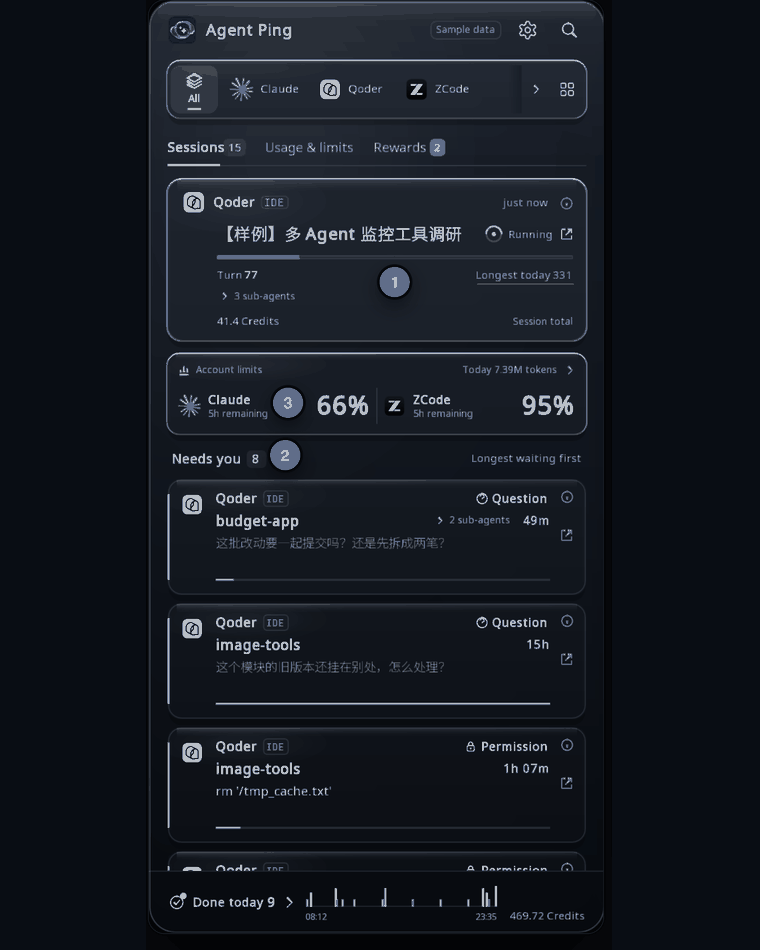
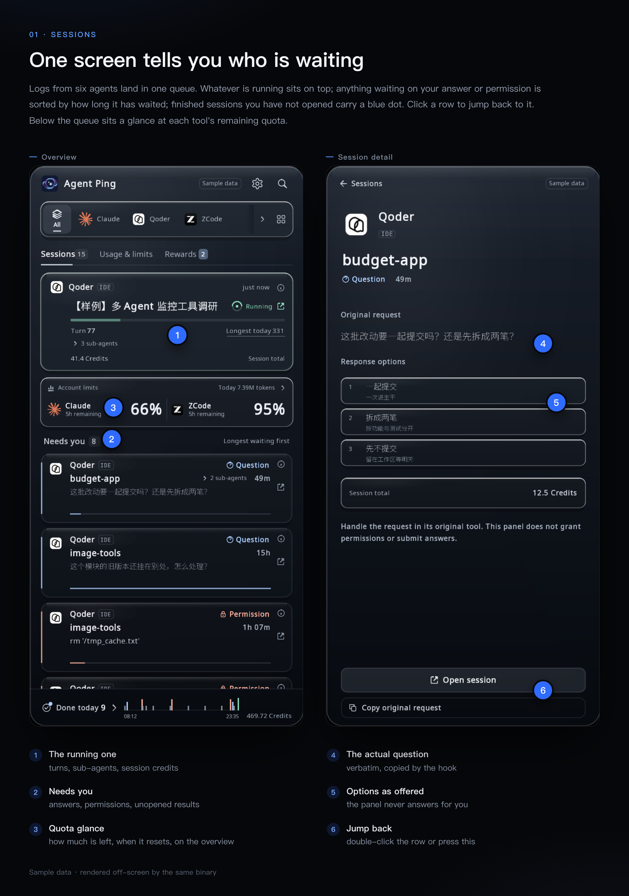
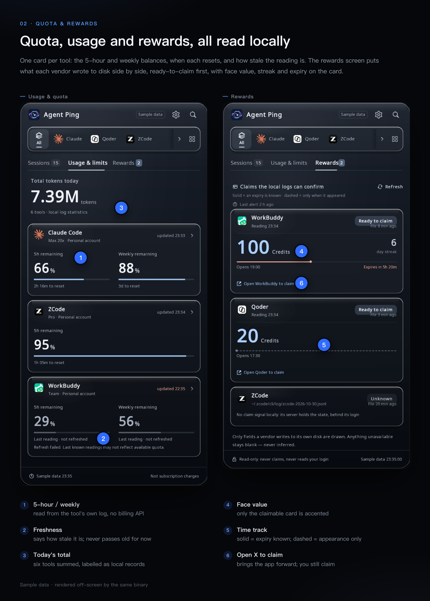

Agent Ping reads the logs and local databases that Claude Code, Codex, OpenCode, Qoder CLI, ZCode and WorkBuddy already write on your machine, and shows who is running, who errored, and who is waiting for your answer. Then it alerts you, and jumps you back into that session.

Sessions waiting on a permission, an answer, or stopped by an error — sorted by how long they have waited. The menu-bar icon carries the counts, so you know before you click.
A system banner and a chime while you are not looking. Open it and you are one double-click away from the session — via URL scheme, AppleScript, or the tool's own command palette.
Today's token usage and each tool's quota window ("66% left, resets in 2h16m"), read from local logs. Fields a tool does not write are left undrawn, never filled with zero.
Qoder CLI, Claude Code, Codex, ZCode, WorkBuddy and OpenCode. One rail filters them; every view below is the same scan round.
NSStatusItem on macOS, StatusNotifierItem over D-Bus on Linux. One C++17 code path behind a platform shim. Interface in six languages.
Not a cost dashboard, not an auto-claimer. The README lists every number's definition and every known limitation.
The built binary has no undefined reference to connect, sendto,
getaddrinfo or socket; check it yourself with nm -u.
No server, no account, no telemetry. The README lists every file path it reads and every
field it takes from it.

